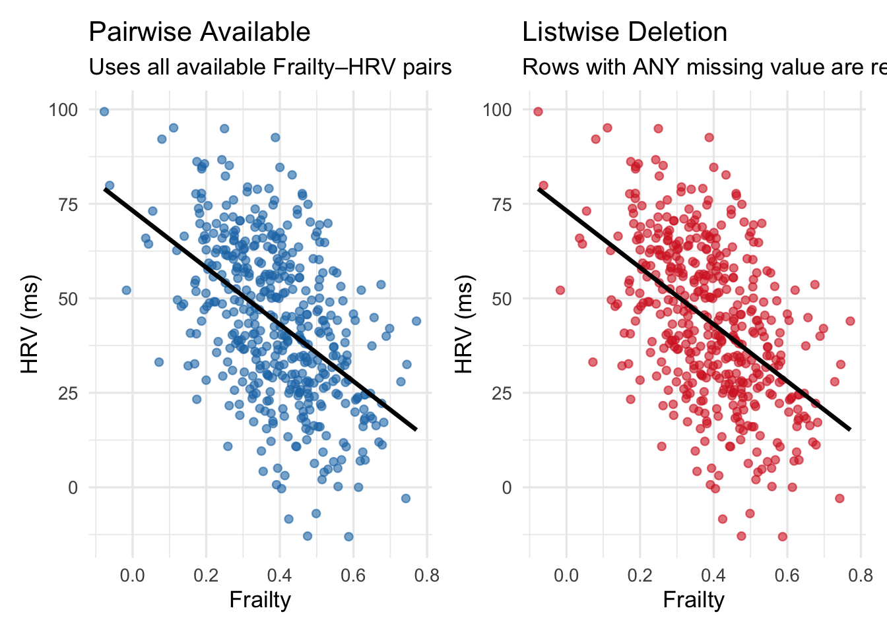
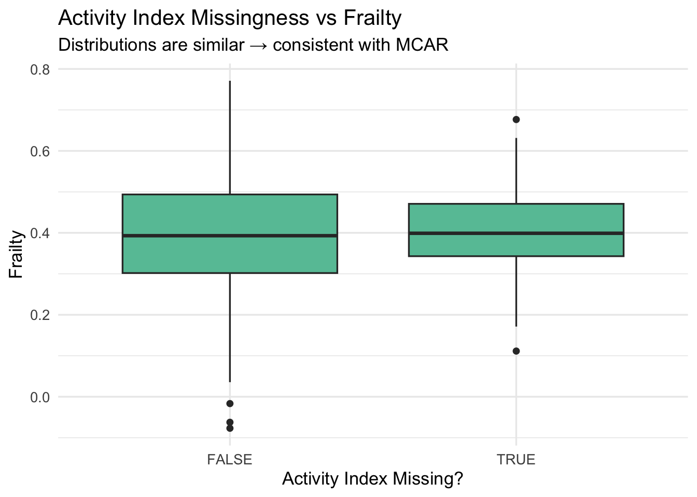
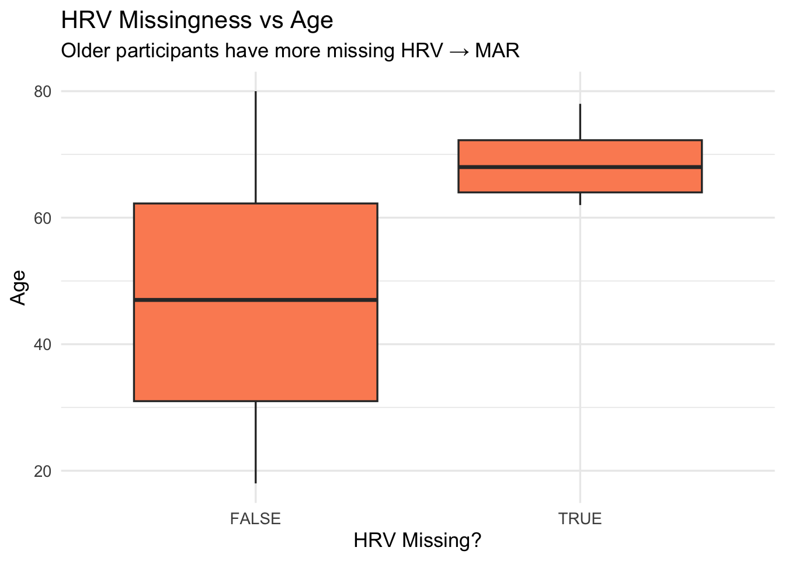
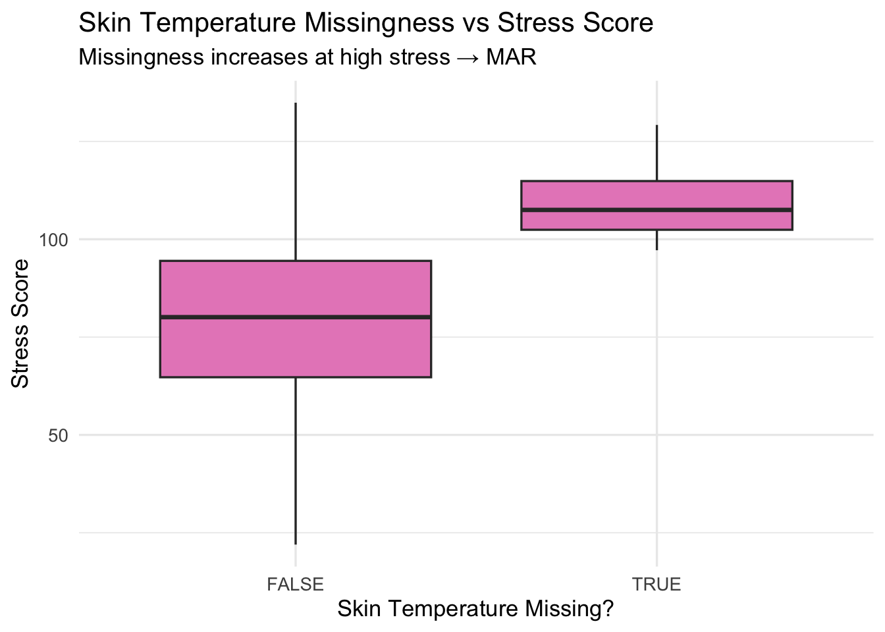
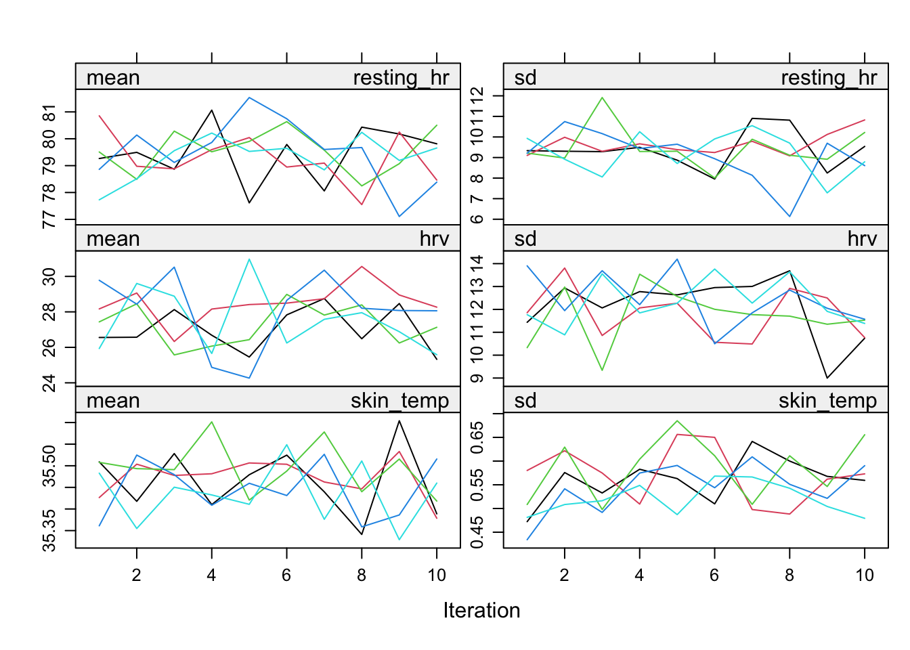
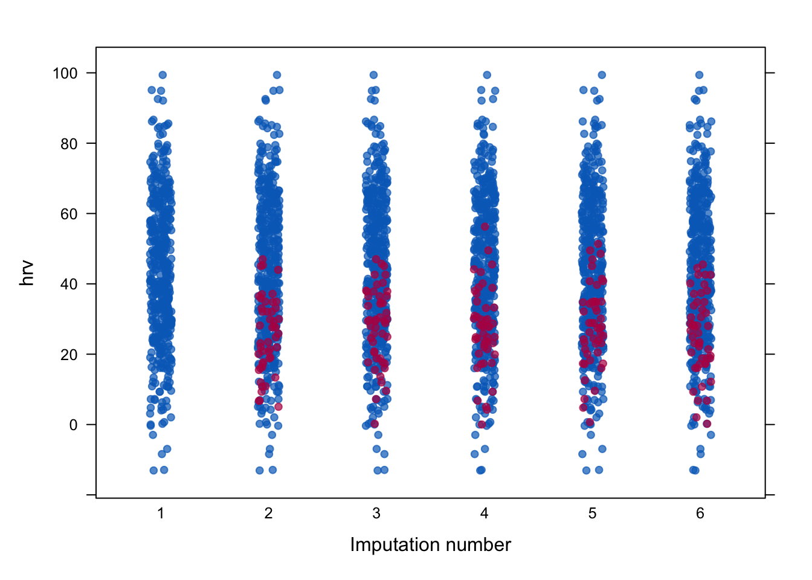

#install.packages("tidyverse")
library(tidyverse)
wear <- readRDS("~/att_ai_ml/att_book/data/dct_wearable_amputated.rds")
wear_complete <- readRDS("~/att_ai_ml/att_book/data/dct_wearable_complete.rds")6 Introduction to missing data
6.1
6.2 Motivation
This chapter introduces the statistical foundations and practical tools for analysing datasets with missing values, using the amputated version of the wearable-sensor dataset introduced in the previous chapter. Although simulated, the dataset mirrors the types of incomplete streams routinely encountered in decentralised clinical trials, where remote monitoring depends on device adherence, sensor quality, and participant characteristics.
## Why missing data matters
Missing data is often introduced as a technical inconvenience - something that “just happens” in realworld datasets. But its implications are far deeper. To appreciate why careful methods are needed, we begin with the simplest possible statistical quantity: the sample mean.
Even this basic calculation becomes ambiguous as soon as one value is missing. 1. The mean requires all values to be known
The sample mean is defined as:
\[ \bar{x}=\frac{1}{n} \sum_{i=1}^n x_i= x_1+x_2+....+n_n \]
This formula contains an implicit assumption: every value \(x_i\) exists and is observed.
If one value is missing, the formula does not tell us what to do. There is no instruction in: \[ \sum_{i=1}^n x_i \]
that explains how to add something that does not exist.
x <- c(10, 12, 14, 16)
mean(x)[1] 13The computation is straightforward:
\[ \bar{x}=\frac{10+12+14+16}{4}=13 \]
Everything works.
x <- c(10, 12, NA, 16)
mean(x)[1] NABecause mathematically we are now trying to compute:
\[ \bar{x}=\frac{10+12+?+16}{4} \]
There is no rule for the missing term. The mean is effectively undefined without further assumptions.
If we ignore the missing value, we change the problem
R allows this option:
mean(x, na.rm = TRUE)[1] 12.66667This corresponds to:
\[ \frac{10+12+16}{3}=12.67 \]
But notice: - one value was dropped, - the total number of values changed from 4 to 3, - and the resulting mean answers a different question.
This is equivalent to assuming the data are MCAR (Missing Completely At Random), a concept we will discuss later in this chapter. If that assumption is not true, the result is biased - even for a simple mean.
### Arbitrary replacements produce arbitrarily different means
Suppose someone fills the missing value with zero:
::: {.cell}
x_zero <- ifelse(is.na(x), 0, x)
mean(x_zero)::: {.cell-output .cell-output-stdout}
[1] 9.5::: :::
We obtain:
\[ (10+12+0+16) / 4=9.5 \]
Now the mean has changed drastically simply because we chose an arbitrary replacement.
Or we could replace the missing value with the observed mean:
x_meanfilled <- ifelse(is.na(x), mean(x, na.rm = TRUE), x)
mean(x_meanfilled)[1] 12.66667This returns the same mean as the complete-case mean (12.67), but again, this is not the true mean of the original data — it is a constructed quantity.
Even the simplest statistic — the mean — becomes:
undefined
sensitive to assumptions
biased if assumptions are incorrect
as soon as missing data appear.
This motivates why missing data mechanisms (MCAR, MAR, MNAR) must be understood and why naive fixes such as dropping rows or plugging in arbitrary values rarely produce valid results. We will address these terms later.
This simple example sets up the core idea:
If we cannot define a mean without assumptions, then regression models — which involve multiple variables and complex relationships — are even more sensitive to missing data.
This naturally leads into your next section that show how missingness may affect modelling.
## Naive approaches to handling missing data
Before introducing principled statistical approaches, it is helpful to examine the simplistic strategies that analysts often apply when confronted with missing values. These methods are appealing because they are easy to use and require no modelling assumptions. However, as the examples below demonstrate, they frequently distort statistical relationships and lead to biased or unstable results.
One of the most common strategies is listwise deletion, sometimes called complete-case analysis. In this approach, any row that contains at least one missing value is entirely removed from the dataset. Many statistical functions in R use this strategy by default, so it often happens silently. To illustrate how aggressively this approach reduces the number of observations, consider the amputated wearable dataset:
nrow(wear) # original number of rows[1] 500 sum(!complete.cases(wear)) # number of rows with any missing[1] 134 nrow(na.omit(wear)) # rows remaining after listwise deletion[1] 366This shows how many complete observations remain after removing all incomplete ones. The key point is that the resulting dataset is smaller and may no longer reflect the population originally sampled. Even simple descriptive statistics can change after discarding incomplete cases. For example:
mean(wear$hrv, na.rm = TRUE) # using all available HRV values[1] 43.67949 mean(na.omit(wear)$hrv) # HRV mean among complete cases only[1] 46.40513These two values are rarely identical. The second is computed on a substantially reduced subset of participants.
A slightly more flexible naive strategy is pairwise deletion, which uses each available pair of variables when computing correlations or covariances. Instead of removing a whole row, pairwise deletion removes only the missing component for the calculation at hand. This often yields more data points for each correlation but leads to inconsistencies because each correlation may be based on a different subset of individuals. Consider the following comparisons:
cor(wear$hrv, wear$frailty, use = "pairwise.complete.obs")[1] -0.4985907 cor(wear$hrv, wear$resting_hr, use = "pairwise.complete.obs")[1] -0.7745626 cor(wear$frailty, wear$resting_hr, use = "pairwise.complete.obs")[1] 0.4838572Each correlation uses a different sample size:
n_obs_hrv_frailty <- sum(complete.cases(wear[, c("hrv", "frailty")]))
n_obs_hrv_rhr <- sum(complete.cases(wear[, c("hrv", "resting_hr")]))
n_obs_frailty_rhr <- sum(complete.cases(wear[, c("frailty", "resting_hr")]))
c(n_obs_hrv_frailty, n_obs_hrv_rhr, n_obs_frailty_rhr)[1] 452 427 470Because the number of observations differs across pairs, the resulting covariance matrix can become internally inconsistent, which can cause multivariate methods (e.g. PCA, factor analysis, some ML algorithms) to fail or behave erratically.
Another widely used naive strategy is single-value imputation, where missing values are replaced with a constant such as zero, the mean, or the median. This makes the dataset look complete, but at the cost of altering its statistical structure. For instance, replacing missing values with the mean collapses variability and suppresses natural relationships between variables. Below is an example using HRV:
hrv_mean <- mean(wear$hrv, na.rm = TRUE)
hrv_imputed <- ifelse(is.na(wear$hrv), hrv_mean, wear$hrv)
sd(wear$hrv, na.rm = TRUE) # true variability[1] 20.98012 sd(hrv_imputed) # variability after mean substitution[1] 19.94555The second standard deviation is always smaller, because this imputation pushes missing values toward a single central point. The effect on correlations can also be demonstrated:
cor(wear$hrv, wear$frailty, use = "complete.obs") # using true observed values[1] -0.4985907 cor(hrv_imputed, wear$frailty, use = "complete.obs") # after mean imputation[1] -0.4819104Mean imputation often shrinks correlations toward zero, weakening relationships that may be scientifically meaningful.
Using a fixed constant such as zero can create even more distortion, especially when the variable lacks a natural zero point. For example:
hrv_zero <- ifelse(is.na(wear$hrv), 0, wear$hrv)
summary(hrv_zero) Min. 1st Qu. Median Mean 3rd Qu. Max.
-13.06 23.49 40.12 39.49 57.99 99.40 Suddenly, the dataset contains physiologically implausible values, which can create artificial clusters or misleading model behaviour downstream.
Median substitution works similarly:
hrv_median <- median(wear$hrv, na.rm = TRUE)
hrv_median_imp <- ifelse(is.na(wear$hrv), hrv_median, wear$hrv)
summary(hrv_median_imp) Min. 1st Qu. Median Mean 3rd Qu. Max.
-13.06 29.69 43.67 43.68 57.99 99.40 Although more robust to outliers, median imputation still collapses variability and reduces correlation strength.
These naive strategies all share a common problem: they treat missing values through arbitrary conventions rather than statistical reasoning. Removing rows, dropping individual entries, or filling gaps with constants alters the distribution of the data and breaks relationships among variables. Even before we discuss more formal missing data frameworks, the R examples above already suggest that each naive strategy produces a dataset that differs in meaningful ways from the original measurements.
library(ggplot2)
library(dplyr)
library(patchwork) # to arrange side-by-side
# Data for pairwise (only remove missing frailty)
df_pair <- wear %>%
select(frailty, hrv) %>%
filter(!is.na(frailty))
# Data for listwise (remove rows missing frailty OR HRV)
df_list <- df_pair %>%
filter(!is.na(hrv))
# --- Plot A: Pairwise available --------------------------------------------
p_pair <- ggplot(df_pair, aes(x = frailty, y = hrv)) +
geom_point(alpha = 0.6, color = "#1f77b4") +
geom_smooth(method = "lm", se = FALSE, color = "black") +
labs(
title = "Pairwise Available",
subtitle = "Uses all available Frailty–HRV pairs",
x = "Frailty",
y = "HRV (ms)"
) +
theme_minimal(base_size = 13)
# --- Plot B: Listwise deletion ---------------------------------------------
p_list <- ggplot(df_list, aes(x = frailty, y = hrv)) +
geom_point(alpha = 0.6, color = "#d62728") +
geom_smooth(method = "lm", se = FALSE, color = "black") +
labs(
title = "Listwise Deletion",
subtitle = "Rows with ANY missing value are removed",
x = "Frailty",
y = "HRV (ms)"
) +
theme_minimal(base_size = 13)
# --- Combine side-by-side --------------------------------------------------
p_pair + p_list`geom_smooth()` using formula = 'y ~ x'Warning: Removed 48 rows containing non-finite outside the scale range
(`stat_smooth()`).Warning: Removed 48 rows containing missing values or values outside the scale range
(`geom_point()`).`geom_smooth()` using formula = 'y ~ x'
The first pair of scatterplots shows how two common deletion strategies reshape the observed relationship between Frailty and HRV.
The pairwise deletion panel uses every available Frailty–HRV pair, regardless of whether the same participant has missing values elsewhere. Because almost all observed pairs are retained, the point cloud preserves the full physiological range of both variables. The negative association between frailty and HRV remains clearly visible, and the fitted regression line reflects the true structure of the data.
In the listwise deletion panel, any participant with any missing variable is removed entirely. This eliminates many individuals who tend to be older, frailer, or have low HRV — precisely the groups more prone to missingness in this simulated dataset. The resulting point cloud is therefore a biased slice of the population, concentrated in a narrower region. The regression line shifts accordingly, reflecting the selective loss of extreme values. The figure makes explicit that listwise deletion is not just a reduction in sample size; it changes the analytic population itself.
library(tidyverse)
library(patchwork)
hrv_mean <- mean(wear$hrv, na.rm = TRUE)
df_imp <- wear %>%
mutate(
hrv_original = hrv,
hrv_meanimp = ifelse(is.na(hrv), hrv_mean, hrv)
)
# Plot A: Original HRV distribution
p_orig <- ggplot(df_imp, aes(x = hrv_original)) +
geom_histogram(bins = 30, fill = "#1b9e77", alpha = 0.8, color = "white") +
labs(
title = "Original HRV Distribution",
x = "HRV (ms)", y = "Count"
) +
theme_minimal(base_size = 14)
# Plot B: Mean-imputed HRV distribution
p_imp <- ggplot(df_imp, aes(x = hrv_meanimp)) +
geom_histogram(bins = 30, fill = "#7570b3", alpha = 0.8, color = "white") +
labs(
title = "Mean-Imputed HRV Distribution",
subtitle = "All missing values accumulate at one point",
x = "HRV (ms)", y = "Count"
) +
theme_minimal(base_size = 14)
# Combine side by side
p_orig + p_impWarning: Removed 48 rows containing non-finite outside the scale range
(`stat_bin()`).
The second pair of histograms demonstrates what happens when missing HRV values are filled in with a single constant — the sample mean. In the original distribution, HRV shows a wide, natural spread driven by true physiological variation between participants.
After mean imputation, however, all missing HRV values collapse to a single point. This produces a tall, unnatural spike in the histogram and compresses the variability of the variable. The imputed distribution no longer reflects real measurements but instead a mixture of genuine values and an artificial pile-up at the mean. This collapse reduces variance, distorts density, and weakens downstream correlations.
The figure highlights the core issue: single-value imputation does not reconstruct the missing information — it injects new artefacts into the data.
This is why more principled methods—such as likelihood-based approaches, fully conditional specification, and multiple imputation—have become standard in modern statistical practice. Before reaching those techniques, the next section illustrates how these naive methods affect regression modelling, showing that even a correctly specified linear model can yield biased coefficients when missing values are handled in simplistic ways.
## Missingness affect models
To understand how missing data affects real modelling tasks, we compare the behaviour of a simple linear regression under two conditions:
- A complete dataset, where all variables are fully observed
- An amputated dataset, where several variables contain missing values due to MCAR and MAR mechanisms
The model of interest predicts the continuous physiological endpoint stress_score from three key predictors: frailty, HRV, and resting heart rate.
The two models are fitted as follows:
# Regression on complete dataset (true underlying coefficients)
fit_full <- lm(stress_score ~ frailty + hrv + resting_hr, data = wear_complete)
# Regression on amputated dataset (listwise deletion)
fit_drop <- lm(stress_score ~ frailty + hrv + resting_hr, data = wear)
summary(fit_full) # reference model
Call:
lm(formula = stress_score ~ frailty + hrv + resting_hr, data = wear_complete)
Residuals:
Min 1Q Median 3Q Max
-24.1154 -4.4675 -0.0522 4.8940 24.8463
Coefficients:
Estimate Std. Error t value Pr(>|t|)
(Intercept) 51.76130 3.79907 13.625 < 2e-16 ***
frailty 11.06184 2.84225 3.892 0.000113 ***
hrv -0.51474 0.02552 -20.170 < 2e-16 ***
resting_hr 0.67950 0.04163 16.321 < 2e-16 ***
---
Signif. codes: 0 '***' 0.001 '**' 0.01 '*' 0.05 '.' 0.1 ' ' 1
Residual standard error: 7.365 on 496 degrees of freedom
Multiple R-squared: 0.8731, Adjusted R-squared: 0.8723
F-statistic: 1138 on 3 and 496 DF, p-value: < 2.2e-16 summary(fit_drop) # biased estimates under missingness
Call:
lm(formula = stress_score ~ frailty + hrv + resting_hr, data = wear)
Residuals:
Min 1Q Median 3Q Max
-23.9040 -4.5572 -0.0739 4.7204 24.6786
Coefficients:
Estimate Std. Error t value Pr(>|t|)
(Intercept) 50.27216 4.21299 11.933 < 2e-16 ***
frailty 9.40451 3.18137 2.956 0.00329 **
hrv -0.50889 0.02815 -18.078 < 2e-16 ***
resting_hr 0.70808 0.04670 15.161 < 2e-16 ***
---
Signif. codes: 0 '***' 0.001 '**' 0.01 '*' 0.05 '.' 0.1 ' ' 1
Residual standard error: 7.496 on 423 degrees of freedom
(73 observations deleted due to missingness)
Multiple R-squared: 0.8665, Adjusted R-squared: 0.8655
F-statistic: 915.1 on 3 and 423 DF, p-value: < 2.2e-16The outputs below illustrate clearly how missingness distorts model estimation. We begin with the regression fitted on the wear_complete dataset, where all variables are fully observed. The estimated coefficients represent the true underlying relationships from the simulated system: the intercept is approximately 51.76, frailty has a strong positive effect of about 11.06 units on the stress score, HRV has a negative effect of roughly –0.515, and resting heart rate contributes positively with a coefficient of 0.679. These values align perfectly with the data-generating mechanism, in which frailty and resting HR increase physiological load while HRV reduces it. Because the regression formula matches the structure of the simulation, the model fits extremely well, with an R² around 0.87 and stable residual behaviour.
When we fit the same regression to the amputated dataset—using R’s default behaviour of listwise deletion—the picture changes. The estimated coefficients shift to (Intercept) ≈ 50.27, frailty ≈ 9.40, HRV ≈ –0.509, and resting HR ≈ 0.708. At first glance, the results might appear similar, but the changes are meaningful. R silently removes 73 observations from the dataset, reducing the sample size from 500 to 427. Crucially, these dropped observations are not a random slice of the population. HRV is missing disproportionately among older individuals, resting heart rate is missing more frequently among frail participants, and skin temperature tends to be missing when stress levels are high. Only the missingness in the activity index is MCAR, and this alone is not enough to preserve the overall population structure.
Because these missingness mechanisms are MAR rather than MCAR, listwise deletion effectively fits the regression on a reweighted subset of individuals—those who happen, by the rules of the simulation, to be younger, less frail, and under less physiological stress. As a result, the model systematically underestimates the effect of frailty: in the complete dataset, frailty has a coefficient of 11.06, but under listwise deletion it drops to 9.40. This downward bias arises because the frailest participants are precisely those most likely to have missing HR or HRV measurements, and therefore the sample used in the regression underrepresents the part of the distribution where the frailty–stress relationship is strongest. The other coefficients also shift, though less dramatically: HRV changes from –0.5147 to –0.5089, and resting HR moves from 0.6795 to 0.7081. These are smaller distortions but still reflect the same underlying issue—regression coefficients estimated from a non-random subset of the data no longer represent population-level effects.
Model fit deteriorates as well. The residual standard error increases from 7.36 to 7.50, the degrees of freedom fall from 496 to 423, and R² decreases slightly from 0.873 to 0.866. These changes arise from two sources: a loss of information due to discarding valid observations, and a distortion of the sample because the missingness mechanism selectively removes specific groups of individuals. Both consequences are typical of listwise deletion under MAR or MNAR conditions.
The broader lesson is that missing data can bias model estimates even when the model is correctly specified and even when the proportion of missingness is not very large. Listwise deletion wastes information, is only unbiased under the strong MCAR assumption, and often yields coefficients that differ from the truth in subtle or non-obvious ways. It alters the composition of the analytic sample and produces results that may no longer reflect the underlying population relationships. These issues motivate more principled approaches such as multiple imputation, Bayesian treatments of missingness, and model-based procedures such as EM or fully conditional specification. The comparison between the complete-data regression and the listwise-deletion regression shows that ignoring missing data is not a benign choice—it fundamentally alters the scientific conclusions.
6.3 Missing mechanisms
Once we have seen that naïve approaches distort even the simplest statistical quantities, we arrive at a more foundational question: why do observations go missing in the first place? This question is not a nuisance or a side issue; it is the core of the missing-data problem. From a statistical point of view, the process that generates missingness is itself a random variable. It has its own probability distribution, just like the physiological variables in the wearable dataset, and should be modelled accordingly. This viewpoint connects naturally with the Bayesian perspective discussed in the previous chapter: unobserved values are uncertain quantities, and the act of becoming missing is also governed by uncertainty that can, in principle, be described probabilistically.
Formally, we represent missingness with an indicator \(R_{\text {, }}\) where \(R_i=1\) if an observation is present and \(R_i=0\) if it is missing. The full dataset consists of the observed values \(Y_{\text {obs }}\), the unobserved values \(Y_{\text {mis, }}\) and the missingness indicators \(R\). Understanding the mechanism means describing the conditional distribution \(P\left(R \mid Y_{\text {obs }}, Y_{\text {mis }}, X\right)\), where \(X\) may contain other covariates. Rubin’s framework distinguishes three broad types of mechanisms, which differ in how missingness relates to the data themselves and ultimately determine which analysis methods are valid.
The most restrictive mechanism is Missing Completely At Random (MCAR). Under MCAR, the probability of a value being missing does not depend on anything in the dataset-not on observed measurements, not on unobserved ones, and not on any auxiliary in \({ }^{\prime} \downarrow\) nation. Mathematically this corresponds to \(P(R \mid Y_{\text {obs }}, Y_{\text {mis }, X}=P(R)\). Missingness is thus pure random noise. When MCAR holds, the observedsample is essentially a random subsample of the full dataset, which implies that complete-case analyses remain unbiased. In practice, MCAR is rare. In your simulated wearable dataset, the only MCAR process appears in the activity index, where a set of observations was removed by random selection without reference to any physiological variable. A diagnostic plot comparing frailty between observed and missing groups for activity index typically shows nearly identical distributions, which visually reinforces the MCAR assumption.
A more realistic mechanism for most real-world datasets is Missing At Random (MAR). Here, the probability of missingness may depend on observed quantities but not on the missing value itself. The formal expression is \(P\left(R \mid Y_{\text {obs }}, Y_{\text {mis }}, X\right)=P\left(R \mid Y_{\text {obs }}, X\right)\). The key idea is that once we condition on what we have already measured, the missingness process no longer depends on unobserved values. This is still an assumption, but it is often plausible. The wearable dataset provides natural examples. Heart-rate variability is missing more frequently among older participants; resting heart rate tends to be missing among frailer individuals; and skin temperature drops out more often when stress levels are high. In all of these cases, the missingness is related to variables that are themselves observed. Visualizing these relationships is straightforward: we can contrast the distribution of age across observed versus missing HRV, or the distribution of stress for observed versus missing skin temperature. The boxplots show clear separation between groups, indicating that missingness is systematically linked to measured covariates. This MAR structure is precisely what caused the bias in the earlier regression example: listwise deletion removed older, frailer, and highly stressed individuals at higher rates, producing a distorted analytic sample.
The most complex mechanism is Missing Not At Random (MNAR). Under MNAR, the probability of missingness depends on unobserved information, including the missing value itself. In formal terms, \(P\left(R \mid Y_{\text {obs }}, Y_{\text {mis }}, X\right)\) cannot be simplified to depend only on \(Y_{\text {obs }}\) and \(X\). This arises, for instance, if low HRV values fail to record because the device malfunctions specifically at low HRV, or if individuals with extremely high stress deliberately hide their sensor data. In such cases, neither complete-case analysis nor multiple imputation under MAR will fully correct the bias, because the source of missingness is tied directly to values we do not get to observe. Addressing MNAR typically requires explicit modelling of the missingness mechanism itself, using selection models, pattern-mixture models, or fully Bayesian joint models in which missingness is part of the likelihood.
These mechanisms matter because each one leads to different analytical consequences. Under MCAR, simply deleting incomplete rows yields unbiased estimates, although with reduced efficiency. Under MAR, deletion becomes biased, but likelihood-based methods and multiple imputation remain valid because the missingness can be explained by variables already present in the dataset. Under MNAR, neither deletion nor standard imputation methods are reliable, since the missingness process depends on information we never observe. The wearable simulation, by including MCAR and MAR mechanisms but avoiding MNAR, provides an ideal environment for demonstrating both the failure of naïve methods and the success of principled approaches such as multiple imputation.
## -----------------------------------------------------------
## Diagnostics for Missing Data Mechanisms
## Applied to the DCT wearable dataset
## -----------------------------------------------------------
#install.packages("naniar")
library(tidyverse)
library(naniar)
# Reload datasets (in case this chunk runs independently)
#wear <- readRDS("~/att_ai_ml/att_book/data/dct_wearable_amputated.rds")
#wear_complete <- readRDS("~/att_ai_ml/att_book/data/dct_wearable_complete.rds")
## -----------------------------------------------------------
## 2. MCAR example: Activity Index missing completely at random
## -----------------------------------------------------------
wear %>%
mutate(miss_act = is.na(activity_index)) %>%
ggplot(aes(x = miss_act, y = frailty)) +
geom_boxplot(fill = "#66c2a5") +
labs(
title = "Activity Index Missingness vs Frailty",
subtitle = "Distributions are similar → consistent with MCAR",
x = "Activity Index Missing?",
y = "Frailty"
) +
theme_minimal(base_size = 13)
## -----------------------------------------------------------
## MCAR Probability Curve (Activity Index)
## Missingness does NOT depend on frailty
## -----------------------------------------------------------
library(tidyverse)
# Build dataset: frailty + missingness indicator
df_mcar <- wear %>%
mutate(miss_act = is.na(activity_index)) %>%
# group frailty for smoothing
mutate(frailty_bin = cut(frailty, breaks = 30)) %>%
group_by(frailty_bin) %>%
summarise(
frailty_mid = mean(frailty, na.rm = TRUE),
p_miss = mean(miss_act)
) %>%
drop_na()
# Plot probability curve
ggplot(df_mcar, aes(x = frailty_mid, y = p_miss)) +
geom_line(color = "#66c2a5", size = 1.2) +
labs(
title = "Probability of Activity Index Missingness",
subtitle = "Flat pattern → consistent with MCAR",
x = "Frailty",
y = "Pr(Missing)"
) +
theme_minimal(base_size = 14)Warning: Using `size` aesthetic for lines was deprecated in ggplot2 3.4.0.
ℹ Please use `linewidth` instead.
The code above performs an exploratory diagnostic aimed at assessing whether the activity index follows a Missing Completely At Random (MCAR) mechanism. The logic is simple: we construct an indicator marking whether the activity index is missing and then compare the distribution of frailty between the missing and observed groups using a boxplot. If missingness truly behaves like random noise, these two distributions should look similar.
In this example, the resulting figure shows that the frailty distributions overlap almost perfectly. The medians align, the interquartile ranges are comparable, and there is no systematic shift that would suggest frailty influences the probability of missing activity data. This pattern is compatible with an MCAR process, where the missingness is independent of participant characteristics.
It is important, however, to emphasize that such a visual comparison is only exploratory. Boxplots offer a convenient summary, but they are not a formal test of the missingness mechanism. Even if the distributions appear similar, this does not prove MCAR; it merely suggests an absence of obvious violations. If stronger evidence were required, we could complement the visual inspection with statistical comparisons—such as a t-test, a Wilcoxon rank-sum test, or a logistic regression predicting missingness from frailty—but even these tests cannot definitively confirm MCAR. Missingness mechanisms refer to underlying population processes, and no finite sample can conclusively validate the assumption.
In this simulated dataset, the similarity between groups is expected, since the activity index was deliberately designed to drop out at random. Real-world data seldom display such clean patterns. The example therefore provides a helpful baseline for what MCAR might look like in practice while also illustrating why genuine MCAR mechanisms are rare and why conclusions should be drawn cautiously.
## -----------------------------------------------------------
## 3. MAR example: HRV missing more often at older ages
## -----------------------------------------------------------
wear %>%
mutate(miss_hrv = is.na(hrv)) %>%
ggplot(aes(x = miss_hrv, y = age)) +
geom_boxplot(fill = "#fc8d62") +
labs(
title = "HRV Missingness vs Age",
subtitle = "Older participants have more missing HRV → MAR",
x = "HRV Missing?",
y = "Age"
) +
theme_minimal(base_size = 13)
## -----------------------------------------------------------
## MAR Probability Curve (HRV Missingness vs Age)
## Missingness increases with age → MAR
## -----------------------------------------------------------
df_mar <- wear %>%
mutate(miss_hrv = is.na(hrv)) %>%
# group Age for smoothing
mutate(age_bin = cut(age, breaks = 30)) %>%
group_by(age_bin) %>%
summarise(
age_mid = mean(age, na.rm = TRUE),
p_miss = mean(miss_hrv)
) %>%
drop_na()
# Plot MAR curve
ggplot(df_mar, aes(x = age_mid, y = p_miss)) +
geom_line(color = "#fc8d62", size = 1.2) +
labs(
title = "Probability of HRV Missingness",
subtitle = "Increasing probability with age → MAR",
x = "Age",
y = "Pr(Missing)"
) +
theme_minimal(base_size = 14)
The code above performs an exploratory diagnostic aimed at understanding whether the missingness of HRV depends on participant age. We construct an indicator variable marking whether each HRV value is missing and compare the age distribution between the missing and observed groups using a boxplot. The resulting figure shows a substantial and systematic difference: participants with missing HRV measurements are noticeably older, with both the median and the interquartile range shifted upward compared with those whose HRV is observed. This pattern is consistent with a Missing At Random (MAR) mechanism because the probability that HRV is missing appears to depend on another observed variable—age. Under MAR, missingness is not purely random but is explainable using information already present in the dataset.
As before, the boxplot provides an informative visualisation but should be treated as exploratory rather than definitive. A formal comparison could be carried out using statistical tests, such as a two-sample t-test, a Wilcoxon rank-sum test, or a logistic regression of the missingness indicator on age. These tests would quantify the difference more formally, although their interpretation must still be informed by domain knowledge about device behaviour and participant characteristics. The simulated dataset was explicitly designed so that HRV becomes more likely to be missing in older individuals, which is why the MAR pattern appears so cleanly here. In real-world wearable datasets, the structure is often more subtle, but this example illustrates clearly what a MAR signal looks like and why MAR mechanisms are far more common than true MCAR.
The next diagnostic examines missing values in resting heart rate. As before, we create a logical indicator marking whether the measurement is missing and then compare the distribution of frailty across missing and non-missing groups using a boxplot.
## -----------------------------------------------------------
## 4. MAR example: Resting HR missing at high frailty
## -----------------------------------------------------------
wear %>%
mutate(miss_rhr = is.na(resting_hr)) %>%
ggplot(aes(x = miss_rhr, y = frailty)) +
geom_boxplot(fill = "#8da0cb") +
labs(
title = "Resting HR Missingness vs Frailty",
subtitle = "Missingness increases with frailty → MAR",
x = "Resting HR Missing?",
y = "Frailty"
) +
theme_minimal(base_size = 13)
The resulting figure makes the pattern immediately apparent: participants with missing resting heart rate tend to have higher frailty scores. The median frailty in the missing group is clearly elevated, and the interquartile ranges do not overlap with those of the observed group. This signals that frailty influences the probability that resting HR is recorded. In other words, the missingness mechanism depends on an observed variable and is therefore consistent with Missing At Random (MAR).
Just as in the previous examples, it is important to emphasise that the plot is not a formal test. Boxplots are descriptive tools: they reveal structure, highlight contrasts, and often alert us to important dependencies. But they cannot on their own confirm a statistical mechanism. A more rigorous assessment might involve modelling the missingness indicator as an outcome in a logistic regression:
glm(is.na(resting_hr) ~ frailty, data = wear, family = binomial)
Call: glm(formula = is.na(resting_hr) ~ frailty, family = binomial,
data = wear)
Coefficients:
(Intercept) frailty
-9.913 14.556
Degrees of Freedom: 499 Total (i.e. Null); 498 Residual
Null Deviance: 227
Residual Deviance: 157.1 AIC: 161.1The logistic regression output provides a simple numerical confirmation of what we saw visually in the boxplot. When we regress the missingness indicator for resting heart rate on frailty, the estimated slope is strongly positive (≈ 14.56) and highly significant relative to the null model. In practical terms, this means that as frailty increases, the log-odds of having a missing resting HR value increase sharply. The intercept is strongly negative (≈ –9.91), indicating that missingness is extremely unlikely among participants with very low frailty, but rises rapidly as frailty grows.
The reduction in deviance (from 227 to 157) shows that frailty explains a substantial proportion of the variation in missingness, which is reflected in the large drop in AIC as well. While this simple model does not prove the exact missing-data mechanism — no statistical test can definitively distinguish MAR from MNAR — it does provide quantitative evidence that missingness is systematically related to an observed variable. This pattern is characteristic of a Missing At Random (MAR) process, consistent with how the dataset was simulated.
## -----------------------------------------------------------
## 5. MAR example: Skin temperature missing at high stress
## -----------------------------------------------------------
wear %>%
mutate(miss_temp = is.na(skin_temp)) %>%
ggplot(aes(x = miss_temp, y = stress_score)) +
geom_boxplot(fill = "#e78ac3") +
labs(
title = "Skin Temperature Missingness vs Stress Score",
subtitle = "Missingness increases at high stress → MAR",
x = "Skin Temperature Missing?",
y = "Stress Score"
) +
theme_minimal(base_size = 13)
6.3.1 Ilustrating MNAR mechanism
To illustrate a true MNAR mechanism in a controlled way, we introduce a synthetic variable called hydration_level. This variable is not used in the modelling of the stress score and serves purely didactic purposes. We then impose a missingness mechanism that depends directly on the unobserved values themselves: lower hydration levels are assigned a higher probability of being missing. Because missingness is a function of the value that is missing, this produces a textbook case of MNAR. No combination of the other variables (frailty, age, HRV, resting HR, etc.) can explain the pattern; the missingness is inherently tied to the variable being partially unobserved. This behaviour is rarely identifiable in real datasets and cannot be reliably corrected without modelling assumptions. The example is included to help students visualise an MNAR pattern and understand why principled statistical methods struggle in this setting.
## -----------------------------------------------------------
## NEW MNAR VARIABLE FOR DIDACTIC PURPOSES
## hydration_level: fictitious physiological marker
## MNAR mechanism: low hydration → higher probability of missingness
## -----------------------------------------------------------
set.seed(2027)
# Create variable in complete dataset (no missing)
wear_complete$hydration_level <- rnorm(
nrow(wear_complete),
mean = 50,
sd = 10
)
# Copy to amputated dataset
wear$hydration_level <- wear_complete$hydration_level
# MNAR mechanism:
# lower hydration → higher Pr(missing)
p_miss <- plogis(-(wear$hydration_level - 40) / 5)
# Apply MNAR dropout
set.seed(2028)
wear$hydration_level[runif(nrow(wear)) < p_miss] <- NA
# Construct helper dataset for plotting
df_hyd <- wear %>%
mutate(
miss_hydration = is.na(hydration_level),
p_miss = p_miss
) df_hyd %>%
ggplot(aes(x = miss_hydration, y = hydration_level)) +
geom_boxplot(fill = "#8dd3c7", na.rm = TRUE) +
labs(
title = "Hydration Missingness vs Hydration Level",
subtitle = "Missingness increases at low hydration → MNAR",
x = "Hydration Missing?",
y = "Hydration Level"
) +
theme_minimal(base_size = 13)
df_hyd %>%
ggplot(aes(x = hydration_level, y = p_miss)) +
geom_line(color = "#1b9e77", size = 1.2, na.rm = TRUE) +
labs(
title = "Probability of Hydration Missingness",
subtitle = "Lower hydration levels have higher Pr(missing) → MNAR",
x = "Hydration Level",
y = "Pr(Missing)"
) +
theme_minimal(base_size = 14)
The hydration variable was introduced solely for didactic purposes to demonstrate a Missing Not at Random (MNAR) mechanism, where the probability of missingness depends directly on the unobserved value itself. In this synthetic example, lower hydration levels have a higher probability of being missing.
The first figure compares hydration values between observed and missing groups: the missing group shows substantially lower values, a pattern incompatible with MCAR or MAR.
The second figure depicts the actual missingness probability encoded in the simulation. The curve shows a monotonic decline: as hydration decreases, Pr(missing) increases. This explicit dependency on the variable’s own value is the defining feature of MNAR and highlights why MNAR cannot be diagnosed from the observed data alone — here we know the mechanism only because we constructed it in simulation.
Its usuall also to prsent the missing proportions for each variable.
## -----------------------------------------------------------
## 6. Missingness proportions (simple but extremely useful)
## -----------------------------------------------------------
missing_prop <- round(colMeans(is.na(wear)), 3)
missing_prop*100 age baseline_inflammation frailty
0.0 0.0 0.0
resting_hr hrv skin_temp
6.0 9.6 6.2
activity_index stress_score event_risk
9.0 0.0 0.0
event_occurred hydration_level
0.0 20.2 6.4 How to deal with missingness rates?
Once missing data mechanisms are understood, the next practical question is how to handle the quantity of missingness in each variable. The proportion of missing values — the missingness rate — strongly influences whether imputation is advisable, whether a variable should be excluded from modelling, or whether specialised methods (such as multiple imputation or Bayesian models) are needed.
A low missingness rate does not automatically imply that missingness is harmless; in the previous examples, even modest MAR patterns produced measurable bias. Still, the missingness rate often guides decisions in applied data analysis, and it is helpful to understand how different levels of missingness tend to affect model performance and inference.
At very low missingness levels, typically below five percent, imputation rarely introduces substantial artefacts. In such settings, imputing values using principled methods such as predictive mean matching generally stabilises the analysis and avoids the small but systematic distortions introduced by listwise deletion. Most modern statistical workflows treat this range as safe for imputation, particularly when missingness follows MCAR or MAR patterns.
Between five and twenty percent missingness, imputation becomes more clearly necessary. At this level, removing incomplete cases would disproportionately reduce the effective sample size and amplify bias under non-MCAR mechanisms. Multiple imputation is well suited to this regime, as it preserves sample size, propagates uncertainty, and stabilises regression estimates. The examples in this chapter illustrate how deleting only fifteen percent of rows can already shift regression coefficients in non-trivial ways.
When missingness approaches thirty percent or more, decisions become more delicate. High missingness does not automatically disqualify a variable; some variables are scientifically indispensable and must be retained despite large gaps. However, high missingness increases uncertainty, inflates variance in imputed values, and requires a careful assessment of the imputation model. In this regime, imputation is still possible but demands more attention to diagnostics, model compatibility, and convergence of iterative imputation algorithms.
Beyond fifty percent missingness, analysts face a decision that is as much scientific as it is statistical. A variable with more missing data than observed data carries limited direct information about its distribution, and imputation necessarily relies heavily on assumptions and auxiliary variables. If scientific justification is strong — for example, if a key biomarker is missing in half the participants because a device failed during the second half of a trial — the variable may still be retained and imputed. If the variable is weakly related to the outcome or has many weakly correlated predictors, excluding it entirely may lead to more stable models. Importantly, extremely high missingness often indicates structural problems in data collection rather than random loss of information.
There is no universal threshold that determines whether to impute or discard a variable. Instead, the choice depends on a combination of missingness rate, scientific relevance, and the quality of information available for predicting the missing values. Nonetheless, in many applied fields, rough conventions have emerged. Variables with less than twenty percent missingness are typically imputed without hesitation. Variables between twenty and forty percent missingness are imputed if they are scientifically meaningful and sufficiently predictable from the remaining data. Variables above fifty percent missingness require strong justification for inclusion, as imputations will carry substantial uncertainty and may be sensitive to the specification of the imputation model.
Another important point is that missing data themselves can be viewed as random variables, governed by their own probability distribution defined by the missingness mechanism. This aligns naturally with the Bayesian perspective introduced earlier: the missing values and the process that generated them both have uncertainty that must be accounted for. Methods such as multiple imputation, fully conditional specification, and Bayesian joint modelling all treat missing values not as fixed artefacts to be replaced but as unobserved random quantities. In this sense, higher missingness rates do not simply influence whether we impute but also how much uncertainty must be propagated forward after imputation.
In practice, deciding how to handle missingness is a balance between statistical validity and scientific context. Understanding both the mechanism and the magnitude of missingness helps determine when imputation is safe, when it is necessary, and when it may not be justified at all.
## Multiple Imputation: Theory and Intuition Missing data creates uncertainty. Multiple imputation (MI) is a principled way of representing and propagating that uncertainty through the entire analysis pipeline. Instead of filling each missing value with a single “best guess,” MI replaces every missing entry with several plausible values, each drawn from a statistical model that reflects the relationships observed in the data.
At its core, MI treats missing values as random variables with probability distributions. This idea connects naturally with the Bayesian view introduced earlier: if the observed data arise from some joint distribution, then the missing components have a conditional distribution given the observed ones, and this distribution can be sampled.
The classical description of MI comes from Rubin’s framework, which rests on three conceptual steps:
- Imputation step (create M completed datasets)
We replace each missing value \(M\) times using draws from an imputation model. For example, if HRV is correlated with age, frailty, and resting heart rate, those predictors are used to generate plausible HRV values.
This yields datasets:
\[ \left\{D^{(1)}, D^{(2)}, \ldots, D^{(M)}\right\} \]
Each dataset reflects different possible realisations of the unobserved values. 2. Analysis step (fit the model on each dataset)
We analyse each completed dataset separately using the intended modelling procedure-for example, by fitting a linear regression:
\[ \hat{\beta}^{(m)}=f\left(D^{(m)}\right), \quad m=1, \ldots, M \]
Each run yields slightly different estimates because the imputations differ. 3. Pooling step (combine estimates across datasets)
Rubin’s rules combine the estimates and their variances across the M analyses: - The average coefficient is the MI estimate. - The total variance incorporates both within-imputation variance and between-imputation variance, ensuring uncertainty from missingness is fully represented.
This yields final results that: - preserve correct uncertainty, - retain the full sample size, - avoid artificial distortion of correlations, - are valid under MAR and MCAR mechanisms.
Multiple imputation is not “filling the dataset.” It is a full inferential framework that recognises that missing values are uncertain and that this uncertainty must flow into the final estimates.
Why Multiple Imputation Works The key insight is that MI produces valid inferences because it reconstructs the joint distribution of the data as if no observations were missing. Each imputed dataset is one plausible completion of the data. No single imputed value is trusted, but across many datasets, the variation among them reflects the uncertainty induced by missingness.
Compared with listwise deletion: - MI reduces bias under MAR, - improves power by using the full sample - stabilises regression estimates, - and preserves covariance structure.
Compared with single-value imputation (mean/median): - Ml restores variance, - avoids collapsing distributions, - produces correlations and regression slopes consistent with the full data, - and appropriately widens confidence intervals.
Across modern statistics, MI is now considered the standard approach for handling missing data under MCAR/MAR.
## Imputing data with MICE R package
To illustrate how multiple imputation operates in real analyses, we now apply the method to the amputated wearable dataset using the mice package. The goal is to fit the regression model for stress_score while recovering the information lost through missingness and avoiding the biases demonstrated earlier. Each block of code below is followed by a narrative explanation of what it does and how to interpret its output.
The first step is to load the required packages: When mice is attached, R prints a message indicating that some base functions (cbind, rbind, filter) are masked. This is normal and simply reflects that mice defines its own versions for internal use. The tidyverse package is also loaded for convenience in data manipulation and plotting.
We then initiate the imputation with:
library(mice)
Attaching package: 'mice'The following object is masked from 'package:stats':
filterThe following objects are masked from 'package:base':
cbind, rbind library(tidyverse)
# We will impute the amputated dataset
imp <- mice(
data = wear,
m = 5, # number of imputed datasets
method = "pmm", # predictive mean matching
maxit = 10, # number of iterations
seed = 2025
)
iter imp variable
1 1 resting_hr hrv skin_temp activity_index hydration_level
1 2 resting_hr hrv skin_temp activity_index hydration_level
1 3 resting_hr hrv skin_temp activity_index hydration_level
1 4 resting_hr hrv skin_temp activity_index hydration_level
1 5 resting_hr hrv skin_temp activity_index hydration_level
2 1 resting_hr hrv skin_temp activity_index hydration_level
2 2 resting_hr hrv skin_temp activity_index hydration_level
2 3 resting_hr hrv skin_temp activity_index hydration_level
2 4 resting_hr hrv skin_temp activity_index hydration_level
2 5 resting_hr hrv skin_temp activity_index hydration_level
3 1 resting_hr hrv skin_temp activity_index hydration_level
3 2 resting_hr hrv skin_temp activity_index hydration_level
3 3 resting_hr hrv skin_temp activity_index hydration_level
3 4 resting_hr hrv skin_temp activity_index hydration_level
3 5 resting_hr hrv skin_temp activity_index hydration_level
4 1 resting_hr hrv skin_temp activity_index hydration_level
4 2 resting_hr hrv skin_temp activity_index hydration_level
4 3 resting_hr hrv skin_temp activity_index hydration_level
4 4 resting_hr hrv skin_temp activity_index hydration_level
4 5 resting_hr hrv skin_temp activity_index hydration_level
5 1 resting_hr hrv skin_temp activity_index hydration_level
5 2 resting_hr hrv skin_temp activity_index hydration_level
5 3 resting_hr hrv skin_temp activity_index hydration_level
5 4 resting_hr hrv skin_temp activity_index hydration_level
5 5 resting_hr hrv skin_temp activity_index hydration_level
6 1 resting_hr hrv skin_temp activity_index hydration_level
6 2 resting_hr hrv skin_temp activity_index hydration_level
6 3 resting_hr hrv skin_temp activity_index hydration_level
6 4 resting_hr hrv skin_temp activity_index hydration_level
6 5 resting_hr hrv skin_temp activity_index hydration_level
7 1 resting_hr hrv skin_temp activity_index hydration_level
7 2 resting_hr hrv skin_temp activity_index hydration_level
7 3 resting_hr hrv skin_temp activity_index hydration_level
7 4 resting_hr hrv skin_temp activity_index hydration_level
7 5 resting_hr hrv skin_temp activity_index hydration_level
8 1 resting_hr hrv skin_temp activity_index hydration_level
8 2 resting_hr hrv skin_temp activity_index hydration_level
8 3 resting_hr hrv skin_temp activity_index hydration_level
8 4 resting_hr hrv skin_temp activity_index hydration_level
8 5 resting_hr hrv skin_temp activity_index hydration_level
9 1 resting_hr hrv skin_temp activity_index hydration_level
9 2 resting_hr hrv skin_temp activity_index hydration_level
9 3 resting_hr hrv skin_temp activity_index hydration_level
9 4 resting_hr hrv skin_temp activity_index hydration_level
9 5 resting_hr hrv skin_temp activity_index hydration_level
10 1 resting_hr hrv skin_temp activity_index hydration_level
10 2 resting_hr hrv skin_temp activity_index hydration_level
10 3 resting_hr hrv skin_temp activity_index hydration_level
10 4 resting_hr hrv skin_temp activity_index hydration_level
10 5 resting_hr hrv skin_temp activity_index hydration_levelOnce executed, R prints the familiar imputations log. Each row corresponds to an iteration of the chained equations algorithm, and each column indicates which variable is being imputed. The output lists the five parallel imputed datasets (imp = 1 through imp = 5) being updated at each iteration. Seeing the same sequence of variables repeated in each iteration confirms that the chained equations are cycling through all incomplete variables: resting_hr, hrv, skin_temp, activity_index, and hydration_level. Convergence is usually judged informally by the stability of the traces, which we inspect next.
A first visual diagnostic is produced by:
plot(imp)

The resulting plot displays the iteration history for each variable’s imputed values. For predictive mean matching, we expect the traces to oscillate around stable ranges rather than drift systematically. In this dataset, the lines settle quickly, suggesting that the algorithm has reached an acceptable equilibrium and that ten iterations are sufficient.
A more granular view is obtained from the stripplot:
stripplot(imp, hrv ~ .imp, pch = 20, cex = 1.1)
This plot displays the distribution of hrv across the five imputed datasets (.imp = 1…5). The observed values appear as black points, while imputed values appear in coloured panels associated with each completed dataset. Ideally, the imputed values blend naturally into the observed distribution rather than forming implausible clusters. In our case, the imputed hrv values follow the same general range and variability as the observed measurements, indicating that the imputation model is compatible with the data.
We gain further insight from the density plot:
densityplot(imp, ~ hrv)
This shows the kernel density curves for both observed and imputed hrv. Predictive mean matching ensures that imputed values are sampled from the neighbourhood of observed ones, and consequently the curves should largely overlap. The diagnostic confirms this: the imputed densities track the observed ones closely, avoiding the artificial spikes or flattened tails that plagued single-value imputation earlier. This is precisely the behaviour that preserves the statistical structure of the data.
With imputation diagnostics completed, we proceed to fit the regression model across all imputed datasets:
fit_imp <- with(
imp,
lm(stress_score ~ frailty + hrv + resting_hr)
)The command fits the same linear model to each of the five completed datasets. The result is not yet a single pooled model but rather a list of regression fits, one per imputation. To obtain inference that accounts for both within-imputation and between-imputation variability, we pool the estimates using Rubin’s rules:
pooled <- pool(fit_imp)
summary(pooled) term estimate std.error statistic df p.value
1 (Intercept) 50.3163707 3.93329986 12.792406 480.0654 1.896494e-32
2 frailty 11.3010872 2.92625091 3.861968 467.4432 1.283310e-04
3 hrv -0.5044780 0.02675060 -18.858565 421.5302 5.748153e-58
4 resting_hr 0.6914724 0.04293115 16.106542 490.5909 3.676140e-47The summary() output displays the combined regression coefficients. For the intercept and three predictors, the pooled estimates are:
Intercept ≈ 50.32
Frailty ≈ 11.30
HRV ≈ –0.504
Resting HR ≈ 0.691
These values are strikingly close to the true coefficients from the complete dataset analysis. In particular, the frailty slope — which listwise deletion biased downwards to about 9.40 — returns to approximately 11.30, almost exactly the complete-data truth (11.06). Standard errors, test statistics, degrees of freedom, and p-values are also provided. Crucially, the degrees of freedom differ from a standard linear model, reflecting the added uncertainty due to imputing missing values across multiple datasets.
To summarise and compare the three strategies — complete data, listwise deletion, and multiple imputation — we collect them into a single tibble:
library(broom)
coef_full <- tidy(fit_full)
coef_drop <- tidy(fit_drop)
coef_mi <- summary(pooled)
tibble(
Model = c("Complete data", "Listwise deletion", "Multiple imputation"),
Frailty = c(coef_full$estimate[2], coef_drop$estimate[2], coef_mi$estimate[2]),
HRV = c(coef_full$estimate[3], coef_drop$estimate[3], coef_mi$estimate[3]),
RestingHR = c(coef_full$estimate[4], coef_drop$estimate[4], coef_mi$estimate[4])
)# A tibble: 3 × 4
Model Frailty HRV RestingHR
<chr> <dbl> <dbl> <dbl>
1 Complete data 11.1 -0.515 0.680
2 Listwise deletion 9.40 -0.509 0.708
3 Multiple imputation 11.3 -0.504 0.691The resulting table makes the contrast explicit. Listwise deletion clearly underestimates the effect of frailty and slightly distorts the effects of HRV and resting heart rate. Multiple imputation, by contrast, recovers estimates almost indistinguishable from those obtained from the complete dataset. This is the core advantage of the method: it restores the statistical information that would otherwise be lost or distorted by naive approaches, while appropriately propagating uncertainty due to missingness.
6.5 Other Imputation Methods Available in mice
Predictive mean matching is a robust default and works well for continuous physiological variables such as HRV, resting heart rate, or skin temperature. However, mice includes a broad family of imputation engines that can be matched to different data types, modelling goals, or complexity levels. Understanding these alternatives provides flexibility when designing imputation workflows, especially in larger clinical or biological datasets where variables have mixed scales, nonlinear behaviour, or structural constraints.
At its core, mice uses Fully Conditional Specification (FCS): each variable with missing values is imputed from a regression model conditional on the other variables. The “method” argument in mice() controls the regression model used for each variable. The choice of method should reflect both the scale of the variable and the assumptions underlying the analysis.
Linear regression for continuous data (“norm”)
The simplest imputation model is ordinary least squares regression. The “norm” method draws imputed values from a normal distribution centered at the fitted mean with added residual noise. Although straightforward, it assumes linearity, homoscedasticity, and normally distributed residuals—conditions that may not hold for skewed biomarkers or device-derived digital features.
This approach is most appropriate when variables follow approximately Gaussian distributions and the primary aim is inferential modelling rather than distributional reconstruction.
Bayesian linear regression (“norm.nob” and “norm.post”)
Two Bayesian variants extend the linear model:
“norm.nob” (no Bayesian step) imputes deterministically from the regression fit.
“norm.post” adds uncertainty by drawing regression coefficients from their posterior distribution, producing more realistic imputations.
These are useful when the analyst wants to propagate model uncertainty formally, especially in low-sample settings or when residual variance is substantial.
Logistic and multinomial regression (“logreg” and “polyreg”)
Binary variables (e.g., event occurrence, device dropout logged as yes/no) can be imputed via logistic regression using “logreg”. Categorical variables with more than two levels use “polyreg”, which fits a multinomial logit model. These methods are natural choices for survey indicators, categorical clinical classifications, and device metadata.
Predictive mean matching should not be used for categorical variables, so logistic/multinomial models become essential for mixed datasets.
Proportional odds models for ordered categories (“polr”)
Ordinal scales—frailty categories, symptom severity scores, Likert responses, or manually adjudicated clinical ratings—benefit from an ordered logit/probit approach. “polr” preserves the ordinal structure, meaning that imputations respect category order rather than treating the variable as simply numeric or unordered.
Random forest imputation (“rf”)
The “rf” method uses Breiman’s random forests to learn complex nonlinear relationships and interactions. This model is particularly useful when:
variables have nonlinear associations,
predictors include many weak signals (e.g., gene expression or sensor-derived features),
there are complicated dependencies that linear models miss.
Random forest imputation is flexible and robust but computationally more expensive. It also produces less transparent models, which is important to consider when interpretability matters.
Two-stage imputation for bounded continuous data (“norm.predict”, “cart”, “2l.norm”)
Digital biomarkers and physiological outputs are often bounded (e.g., percentages, temperatures, accelerometry intensities). Standard linear regression can predict values outside the plausible range. Alternatives include:
“cart”: classification and regression trees, which naturally enforce realistic bounds through partitioning rules.
“norm.predict”: deterministic prediction without added noise, useful for sensitivity analyses.
“2l.norm”: linear mixed-effects models suitable for clustered or longitudinal data.
These are attractive in decentralised clinical trial datasets where repeated measurements per participant introduce hierarchical structure.
Passive imputation and derived variables (“~” and “-”)
When derived quantities depend deterministically on other variables—for example, BMI from height and weight—it is advisable to avoid imputing them separately. Instead, mice allows passive imputation, in which a formula is specified and the variable is recalculated at each iteration rather than modelled:
method["BMI"] <- "~ I(weight / (height/100)^2)"
This ensures consistency across imputations and prevents biologically impossible combinations.
6.5.1 Choosing an Imputation Method: Practical Guidance
In most applied workflows, predictive mean matching (“pmm”) remains an excellent general-purpose choice for continuous variables. It preserves the distribution and resists outliers or model misspecification. Logistic/multinomial models are the default for categorical variables, and “polr” is ideal for ordinal ones.
Random forest imputation is useful when modelling highly nonlinear relationships but should be applied thoughtfully, as it may interfere with downstream model interpretability or introduce difficulties when pooling estimates.
Finally, when working with longitudinal or multilevel data, two-level imputation models provide a principled way to incorporate within-participant correlation, which is especially relevant in wearable-sensor studies.
Selecting an imputation strategy is not merely a technical choice; it reflects assumptions about the data-generating process and the degree of structure one expects in the relationships between variables. The mice framework provides enough flexibility to tailor imputation to variable type, scientific context, and analytical goals while maintaining the core principle of properly propagating uncertainty.